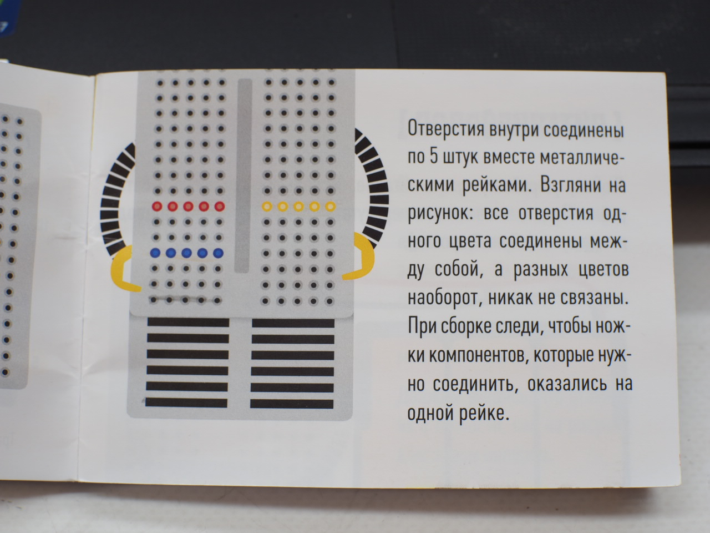

https://www.oreilly.com/library/view/head-first-html/059610197X/





Setup - > pinMode(12, OUTPUT);
Setup - > Serial.begin(9600);
Loop - > Serial.println(analogRead(A2));
ПРОСТЫЕ ВОПРОСЫ — это вопросы, отвечая на которые нужно получить какие-то конкретные сведения, вспомнить и воспроизвести некую (74:) информацию. Например, если я почувствовал, что для решения проблемы мне не хватает данных, я могу задать эти вопросы окружающим или самому себе. Например: «Где я могу купить подержанный телефон?», «Нет ли у вас (меня) знакомых, которые работают в магазинах электроники или занимаются ремонтом телефонов?», «Каков диапазон цен на подержанные телефоны? ».
УТОЧНЯЮЩИЕ ВОПРОСЫ обычно начинаются со слов: «То есть ты говоришь, что...?», «Если я правильно понял, то ...?», «Я могу ошибаться, но, по-моему, вы сказали о ...?». Цель этих вопросов — уточнить информацию, которую вы только что получили от собеседника. Иногда их задают для получения информации, отсутствующей, но подразумевающейся в сообщении. Скажем, у вас в руках оказался прайс-лист на мониторы, но по ценам вы не можете точно определить, подержанные они или новые. Вы звоните в фирму и уточняете: «Если я не ошибаюсь, то вы торгуете новыми мониторами?» или: «Ты сказал, что недавно видел в том магазине монитор, который мне нужен?». Не поленитесь лишний раз задать уточняющий вопрос, чтобы не упустить свой счастливый случай!
ИНТЕРПРЕТАЦИОННЫЕ, или объясняющие, ВОПРОСЫ начинаются, как правило, со слова «почему». При решении проблем они могут вдохновить вас на свежие идеи, позволят получить развернутую информацию об интересующем вас объекте и выяснить непонятные вам причины действий и поступков людей. Например: «Почему я стесняюсь попросить у своего друга денег в долг?», «Почему вы даете на монитор такой маленький гарантийный срок?», «Зачем я трачу столько денег на каталоги, когда можно просто заглянуть в Интернет?».
ТВОРЧЕСКИЕ ВОПРОСЫ — это вопросы, в формулировке которых присутствуют элементы условности, предположения, прогноза. При решении проблемы вы можете задать их себе, когда вам требуются новые идеи, необходим творческий допинг. Например: «Что будет, если я немного повременю с покупкой, подкоплю немного денег, а потом куплю новый современный монитор?», «Что будет, если я попрошу твоих знакомых помочь мне найти нужную модель?», «Что будет, если сейчас я куплю монитор меньшего размера, а через некоторое время, накопив нужную сумму, продам его и куплю тот, который мне нужен?».
ОЦЕНОЧНЫЕ ВОПРОСЫ помогут вам дать предельно точную оценку связанным с вашей проблемой предметам, событиям, фактам. Эти вопросы являются лучшим инструментом выбора наиболее выигрышных из имеющихся у вас идей и вариантов решения проблемы. Например: «Почему цифровой монитор лучше аналогового?», «Чем отечественный монитор отличается от импортного?», «Почему дождаться следующей поставки разумнее, чем приобрести монитор из этой партии?».
ПРАКТИЧЕСКИЕ ВОПРОСЫ устанавливают взаимосвязь между теорией и практикой. Они позволяют трезво оценить ситуацию и степень реальности ваших планов, увидеть проблему со стороны: «А что бы ты предпринял на моем месте?», «Объясни, пожалуйста, каким образом это можно осуществить на практике?», «Где ты видел, чтобы мониторы с высокой степенью защиты так дешево стоили?».
С типами вопросов, надеюсь, вы разобрались, а заодно немного отвлеклись, отдохнули. А сейчас мы «обкатаем» эти знания на практике. Правило «7W» (10-15 минут) Это правило очень наглядно выражено в фольклорных прибаутках. Например:— Куда, Фома, едешь?
— Сено косить.
— На что тебе сено?
— Коровок кормить.
— На что тебе коровы?
— Молоко доить.
— На что тебе молоко?
— Ребяток поить.
— На что ребятки?
— Уму-разуму учить.
— На что учить?
— Чтоб на свете могли жить, людям пользу приносить.
На букву «W» в английском языке начинаются вопросительные слова «Зачем?» и «Почему?». Чтобы осознать причины проблемы, можно воспользоваться правилом «7W». Нужно семь раз сформулировать вопросы, начинающиеся с указанных слов. Я не гарантирую, что проблема тотчас решится, но цель своих действий вы осознаете максимально четко. Возьмите на вооружение этот прием и попробуйте применить его, например, в случае, когда к вам пришел друг и просит совета. Просто задавайте ему подобные вопросы — пусть отвечает. А когда вы будете озадачены очередной проблемой, задайте их самому (самой) себе. Поверьте, этот метод работает очень мощно и эффективно! Может случиться так, что проблема сразу решится сама собой. (77:) «Вопросительные слова» (15-20 минут) Четко сформулируйте проблему. Запишите десять вопросительных слов, которые придут вам на ум. Задайте эти вопросы относительно своей проблемы. А теперь — ответьте на них. Вы сразу же поймёте направление, в котором нужно искать — там, где сложнее всего ответить.
ЧТО?
КТО?
ГДЕ?
КАК?
КОГДА?
ПОЧЕМУ?
ЗАЧЕМ?
ОТКУДА?
КАКОЙ.?
КАКАЯ?
КАКАЯ ВЗАИМОСВЯЗЬ?
ПО КАКОЙ ПРИЧИНЕ?
ЧЕМ ЛУЧШЕ?